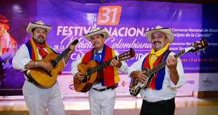
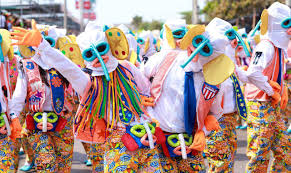
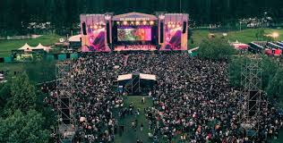
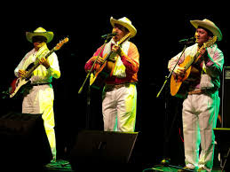
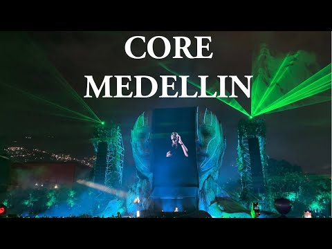
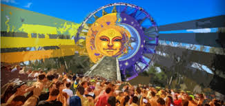
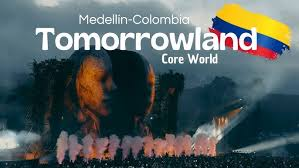

Festivales de Música en Colombia 2025
Descubre los eventos más importantes de música en Colombia para el año 2025.
Haz clic en cada
boton para más detalles.
Festival Nacional de la Música Colombiana 2025

Fechas: 8 al 12 de marzo de 2025 - Ubicación: Ibagué, Tolima
Festival de Música del Caribe 2025

Fechas: 21 al 24 de marzo de 2025 - Ubicación: Cartagena de Indias
Estéreo Picnic 2025

Fechas: 27 al 30 de marzo de 2025 - Ubicación: Bogotá, Parque Simón Bolívar
Festival de la Leyenda Vallenata 2025

Fechas: A finales de abril y principios de mayo de 2025 - Ubicación: Valledupar,
Cesar
CORE Medellín 2025

Fechas: 14 y 15 de febrero de 2025 - Ubicación: Parque Norte, Medellín
Dreaming Festival 2025

Fechas: 21 y 22 de junio de 2025 - Ubicación: Parque Norte, Medellín
BAUM Festival 2025

Fechas: A confirmar - Ubicación: Corferias, Bogotá